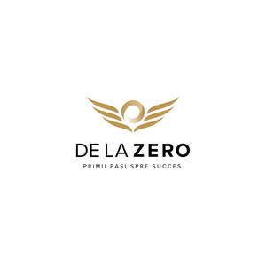

Trade Mark Journal No.2025/036 5 September 2025
UK00004250370 16 August 2025 (9,16,35,38,41,42)

- Class 9
- Podcasts.
- Class 16
- Events programmes; Event programs.
- Class 35
- Subscriptions (arranging of) to books, reviews, newspapers or comic books; Promotion of special events; Arranging and conducting of promotional events; Organisation of exhibitions and events for commercial or advertising purposes.
- Class 38
- Podcasting; Transmission of podcasts; Videocasting; Podcasting services; Audio broadcasting; Streaming audio and video material on the Internet; Broadcasting of video and audio programming over the Internet; Video, audio and television streaming services; Transmission of videocasts; Video broadcasting; Radio program broadcasting; Radio programme broadcasting; Streaming of audio material on the internet; Broadcast of radio programmes; Radio broadcasting; Radio and television program broadcasting; Streaming of video material on the internet; Audio and video broadcasting services provided via the Internet; Digital audio broadcasting; Interactive television and radio broadcasting; Audio, video and multimedia broadcasting via the Internet and other communications networks; Radio and television broadcasting; Television and radio broadcasting; Broadcasting of radio programs; Broadcasting of radio programmes; Music broadcasting; Audio teleconferencing; Subscription television broadcasting; Radio broadcasting of information and other programs; Transmission of audio and video content via satellite.
- Class 41
- Production of podcasts; Provision of entertainment via podcast; Creation [writing] of podcasts; Creation [writing] of educational content for podcasts; Provision of entertainment via podcasts; Production of video and audio recordings; Audio and video recording services; Publication of audio books; Entertainment services for sharing audio and video recordings; TV and radio presenter services; Presentation of radio programmes; Audio, film, video and television recording services; Syndication of radio programmes; Video taping; Production of radio broadcasts; Production and presentation of radio programmes; News programme services for radio or television; Production of audio recordings; Presentation of live comedy shows; Audio recording and production; Audio recording studio services; Audio and video production, and photography; Production of video recordings; Providing audio or video studios; Audio recording services; Providing age ratings for television, movie, music, video and video game content; Hire of video recordings; News syndication for the broadcasting industry; Editing of audio recordings; Providing audio or video studio services; Production of educational sound and video recordings; Audio production; Operation of video and audio equipment for the production of radio and television programs; Rental of audio recordings; Audio and video editing services; Selection and compilation of pre-recorded music for broadcasting by others; Rental of audio tapes bearing recorded music; Recording, film, video and television studio services.
- Class 42
- Hosting of podcasts.
Beniamin Moisa